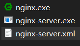
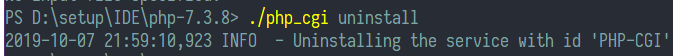
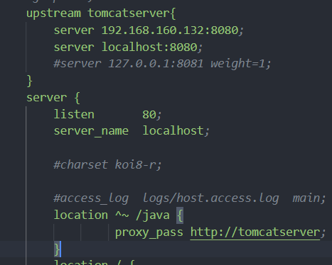

进入 nginx文件夹下,打开conf/nginx.conf，添加如下
location / {
root D:/code/web;//根据你的实际情况输入，此为index.php的目录
index index.html index.php index.jsp;//注意添加 index.php
autoindex on;
if ( -f $request_filename) {
break;
}
if ( !-e $request_filename) {
rewrite (.*) /index.php;
}
location ~ \.php$ {
root D:/code/web;//根据你的实际情况输入，此为index.php的目录
fastcgi_pass 127.0.0.1:9000;
fastcgi_index index.php;
fastcgi_param SCRIPT_FILENAME $document_root$fastcgi_script_name;
fastcgi_buffers 8 128k;
include fastcgi_params;
}
修改完成后重启nginx或者使用nginx -s reload使更改生效
同时定位到PHP所在目录 执行 ./php-cgi -b 127.0.0.1:9000 -c php.ini 保持窗口不要关，打开浏览器输入相应地址即可访问
首先需要下载winsw,下载后复制到nginx文件目录下，改一个你喜欢的名字，比如我改为nginx-server，另外新建一个同名xml，写入一下内容
<service>
<!-- 服务 ID，命令行使用这个名字可以启动/停止服务 -->
<id>nginx-server</id>
<!-- 服务名称，可任意，为了方便建议和 ID 一致 -->
<name>nginx-server</name>
<!-- 服务描述，任意 -->
<description>nginx-server.</description>
<!-- 启动程序名称，不用修改 -->
<executable>nginx.exe</executable>
<!-- 停止服务时执行程序名称 -->
<!-- 解释一下为何用 Win 的 taskkill 命令。因为 Nginx 利用服务启动的情况下无法使用 nginx -s stop 或 nginx -s quiet 命令结束进程，会提示权限不足 -->
<stopexecutable>taskkill</stopexecutable>
<!-- 以下三行是 taskkill 的参数，不用修改 -->
<stopargument>/F</stopargument>
<stopargument>/IM</stopargument>
<stopargument>nginx.exe</stopargument>
<!-- 日志路径，将生成日志至 nginx/logs 目录 -->
<logpath>logs</logpath>
</service>

以管理员方式打开命令行，进入改目录 输入nginx-server install 即可安装为服务
同样将该文件复制一份到php根目录，重命名为PHP-CGI,新建PHP-CGI.xml写入如下
<service>
<id>PHP-CGI</id>
<name>PHP-CGI</name>
<description>PHP-CGI.</description>
<executable>xxfpm.exe</executable>
<!-- 启动参数 -->
<startargument>"php-cgi.exe -c php.ini"</startargument>
<startargument>-n</startargument>
<!-- 启动进程数量，可修改，建议大于 1 -->
<startargument>2</startargument>
<startargument>-i</startargument>
<!-- 监听IP，默认一般都用 127.0.0.1 -->
<startargument>127.0.0.1</startargument>
<startargument>-p</startargument>
<!-- 监听端口，默认一般都用 9000 -->
<startargument>9000</startargument>
<!-- 停止参数 -->
<stopexecutable>taskkill</stopexecutable>
<stopargument>/F</stopargument>
<stopargument>/IM</stopargument>
<stopargument>xxfpm.exe</stopargument>
<logpath>logs</logpath>
</service>
然后 PHP_CGI install即可，可以设置服务成自动启动。
需要先停止服务，然后管理员运行命令行到目录下将之前的 install改成 uninstall即可卸载

只需要设置好什么请求发送到后端即可，比如我设置的所有以Java开头的请求被传送到后端：设置 proxy_pass 后 在upstream填入后端服务器的地址和段口即可

可以把一些静态资源同时交由Nginx处理